Mike Cooke at ST
My writing at:
December 2018
1 Lateral graphene/hexagonal boron nitride heterostructures
2 Quantum dot laser diodes on CMOS-compatible on-axis silicon substrates
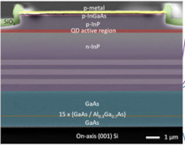
3 Improving ohmic contacts in III-nitride high-electron-mobility transistors
4 Increasing current performance in III-nitride p-channel transistors
5 Mid-infrared aluminium gallium nitride quantum cascade detector on silicon
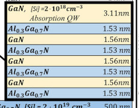
6 Diamond thermal management boosts output power of InAlGaN transistor
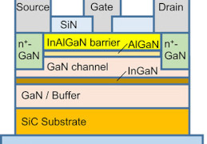
November 2018
1 Monolithic near-ultraviolet optoelectronics systems on silicon
2 Laser annealing enables gate-first fabrication of III-nitride transistors
3 Gallium nitride vertical-channel junction field-effect transistors
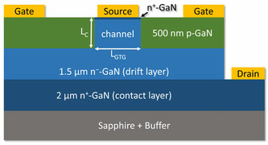
4 Gallium nitride microwire arrays on silicon for ultraviolet photodetection
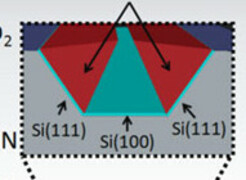
5 Gallium oxide trench Schottky barrier diodes with ultra-low leakage
6 Powering up gallium oxide metal-oxide-semiconductor field-effect transistors
October 2018
1 Orienting quantum cascade lasers to higher efficiency and lower threshold
2 High-performance light emission from III-nitride stress/dislocation control
3 Large-area silicon carbide ultraviolet visible-blind avalanche photodiode
4 Quantum cascade superluminescent arrays for mid-infrared applications
5 III-V heterojunction bipolar transistor MOCVD on 200mm (001) silicon
6 Lateral epitaxial overgrowth on silicon to boost ultraviolet output power
September 2018
1 Magnetic sensing with gallium nitride high-electron-mobility transistors
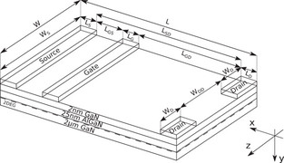
2 Vertical-cavity resonant near-green lasing of indium gallium nitride
3 Thin gallium nitride on silicon carbide high-power and high-frequency electronics
4 Black phosphorus photodiode for mid-wavelength infrared detection
5 Silicon monoxide gate dielectric for gallium nitride transistors
6 Argon-ion-enhanced room-temperature bonding with low resistance
August 2018
1 Integrating capacitors into p-gallium nitride gate transistors on silicon
2 III-nitride solar cells on hexagonal boron nitride separation layer
3 Gallium oxide transistors increase breakdown voltage to 1.8kV
4 Atomic-layer sidewall passivation of indium gallium nitride μLEDs
5 Photo-electro-chemical deep trench etching in gallium nitride
6 Activating buried p-type gallium nitride for power electronics
July 2018
1 Undoped gallium nitride upper waveguide for reduced laser threshold
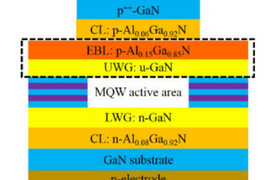
2 Speeding oscillation of double heterojunction bipolar transistors
3 Improving aluminium gallium nitride transistor channel performance
4 Plasmon-enhanced mid-infrared photodetection at room temperature
5 Structures to enhance light extraction in indium gallium nitride LEDs
6 Amber light for zinc tin nitride boost from indium gallium nitride wells
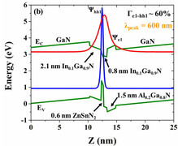
June 2018
1 Aluminium indium nitride as interlayer for green-emitting multi-quantum wells
2 Gallium nitride tunnel junctions from pure MOCVD process for VCSELs
3 Lateral epitaxial overgrowth on silicon to boost ultraviolet output power
4 Monolithic indium phosphide on silicon growth for optoelectronics
5 Schottky diodes integrated in vertical gallium nitride transistors on silicon
6 Hole gas boost for deep ultraviolet diode wall-plug efficiency
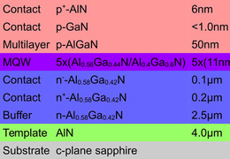
May 2018
1 Normally-off gallium nitride nanowire transistors with inverted p-channel
2 Lowering thresholds for III-nitride vertical-cavity surface emitting lasers
3 High-voltage gallium oxide transistors with more than 1kV breakdown
4 Strain engineering higher hole density in N-polar aluminium gallium nitride
5 Room-temperature photoluminescence from III-IV-V semiconductor alloys
6 Expanding the application potential of hydride vapor phase epitaxy
April 2018
1 Near-ultraviolet aluminium gallium nitride laser diode on silicon
2 Combining boron nitride and gallium oxide to boost power transistor
3 Electro-absorption modulators for vertical-cavity surface-emitting
4 Platform for fully vertical gallium nitride on silicon power devices
5 Near-ultraviolet optoelectronic transmitter/receiver system
6 Indium arsenide quantum dot laser on silicon from molecular beam epitaxy
March 2018
1 Semi-polar III-nitride integration for visible light communication
2 Indium arsenide channel transistors for mm-wave and high-speed applications
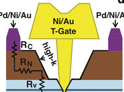
3 Silicon hole injector for deep ultraviolet aluminium gallium nitride diodes
4 Tunneling to green light emission with improved efficiency performance
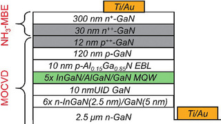
5 Improving magnesium doping of aluminium gallium nitride
6 Silicon carbide superjunction Schottky junction diodes
February 2018
1 Opening up bandwidth for visible light communication technology
2 Continuous-wave operation of semi-polar blue laser diodes
3 III-nitride microphotodetector for visible light communication
4 Tri-anode/slant-gate gallium nitride Schottky barrier diode on silicon
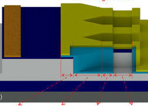
5 Vanadium dioxide enables III-nitride phase-transition field-effect transistor
6 Room-temperature electrically pumped indium gallium nitride microdisk laser
January 2018
1 ‘First’ quasi-vertical gallium nitride trench MOSFET on six-inch
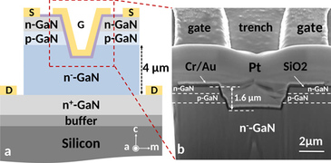
2 Reducing dislocations in gallium arsenide on silicon templates
3 Questioning carrier distributions in III-nitride light-emitting diodes
4 Boosting indium gallium nitride LEDs on silicon with tensile stress
5 Stacking III-nitride laser diodes with tunnel junction connections
6 Microwave deposition of gallium oxide on III-nitride on silicon substrate
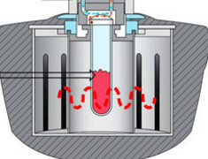